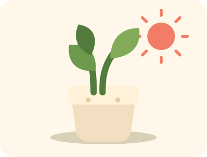

MAKE ROOM FOR WHAT MATTERS
A little,
every day.
One clear thing. A small start.
A day that feels like yours.

Your day, simplified
No perfect days required.FOCUS
00:00
One small piece at a time.
A WAY BACK
What’s getting in the way?
Choose what fits. We’ll find a smaller step.
A little more momentum.
SHOWING UP ADDS UP
Your week
Your first small win is waiting.